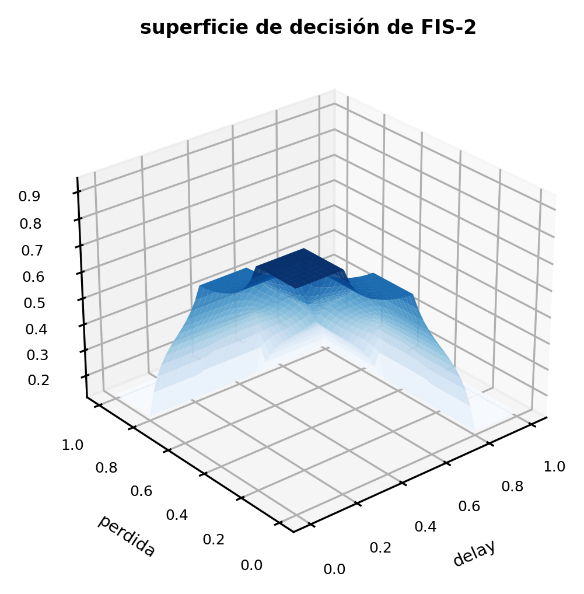

Retardo
¿Cuánto tarda un paquete?
D = suma de retardos
20 + 30 = 50 ms
F-GAMR: evolución + lógica difusa
para decidir rutas en redes SDN.
Jesus Alonso Chaffe Gonzalez
Rol 202023501-5 · UTFSM · 2026
Una ruta corta puede ser mala si muchas conexiones usan el mismo enlace. Mi proyecto extiende GAMR para incorporar conocimiento sobre la calidad de servicio en dos decisiones: cómo explorar rutas y cuál de las alternativas instalar. La propuesta se llama F-GAMR y combina dos técnicas del curso: algoritmos evolutivos y lógica difusa. Primero explicaré la red y las métricas; después el método, los resultados y sus límites.
Aquí se simulan estados y rutas. No se ejecuta un controlador real.
SDN significa redes definidas por software. Su idea es separar quién decide las rutas de quién reenvía paquetes. Los switches forman el plano de datos. El controlador recoge información y configura esos switches. Por encima, una aplicación decide políticas: ahí se ubicaría F-GAMR. OpenFlow es una forma de comunicar control y datos, pero mi implementación no lo ejecuta: simula la red en Python. La ventaja de una visión global es considerar cómo interfieren las solicitudes simultáneas. El desafío es que las mediciones pueden cambiar mientras se calcula e instala la solución.
¿Cuánto tarda un paquete?
¿Qué fracción no llega?
¿Cuánto puede transportar?
Menos margen libre; la cola crece al acercarse al 100%.
Tercer objetivo: promedio del máximo ρ de cada ruta, acotado a 100%. Capacidad disponible: restricción.
QoS significa calidad de servicio. Retardo es tiempo, medido en milisegundos, y se suma por enlace. Pérdida es la fracción que no llega: se combinan las probabilidades de supervivencia; dos enlaces con diez por ciento producen diecinueve, no veinte. La capacidad disponible depende del cuello de botella, usando capacidad residual después de la carga de fondo. Muevo la carga: ochenta megabits sobre cien representan ochenta por ciento de utilización. Cerca de cien hay más espera; superar la capacidad provoca desborde en el simulador. GAMR minimiza retardo, pérdida y utilización del cuello de botella, sujeto a una restricción de capacidad. Esa restricción individual no garantiza que todas las solicitudes juntas quepan.
Esquema 2D; la evaluación real usa 3 objetivos.
Nadie mejora todos sus objetivos a la vez. Después hay que elegir una configuración.
Una solución domina a otra cuando no es peor en ningún objetivo y es mejor en al menos uno. Las alternativas que nadie domina forman Pareto. El gráfico simplifica a retardo y pérdida; el experimento usa tres objetivos. Pulso HV: el área sombreada, volumen en tres dimensiones, resume cobertura hasta una referencia desfavorable. Mayor es mejor. Pulso IGD: las líneas son distancias desde puntos de referencia a la solución encontrada más cercana; se promedian y menor es mejor. Nuestra referencia es la unión no dominada de los resultados, no un óptimo verdadero. Se usan escalas comunes por instancia. Estas métricas juzgan un conjunto de opciones; QoS juzga la configuración instalada. IGD no participa en la parada de GAMR.
La memoria guarda rutas útiles para el siguiente.
α: probabilidad de reutilización · no es β
O máximo 500 generaciones. Termina el cálculo,
no el tráfico; luego se vuelve a optimizar.
AG significa algoritmo genético. Cada individuo contiene una ruta por solicitud: se evalúan juntas. GAMR combina rutas memorizadas y caminatas aleatorias; alfa vale cero coma cinco y controla la reutilización. Después cruza y muta, y NSGA-II conserva opciones de calidad y diversas. La búsqueda termina si el hipervolumen cambia menos de diez a la menos cuatro respecto de diez generaciones antes, o al llegar a quinientas. Detener GAMR significa terminar el cálculo del intervalo: se instala una configuración y el tráfico continúa. En el intervalo siguiente se optimiza nuevamente. No significa haber probado un óptimo global, y el IGD no es criterio de parada. El punto débil que abordo está en explorar sin guía QoS y elegir finalmente por solapamiento.
De vecinos uniformes
a saltos guiados por QoS.
De menor solapamiento
a compromiso retardo–pérdida.
La contribución no es reemplazar GAMR ni afirmar que inventé la hibridación genético-difusa. Es incorporar dos sistemas concretos en sus decisiones. FIS-1 guía la construcción y la mutación; pregunta P1: mejora el frente y reduce el costo. FIS-2 escoge del frente; pregunta P2: reduce pérdida realizada con un compromiso aceptable. Memoria, cruce, selección y parada quedan iguales. La relación con el curso es directa: búsqueda evolutiva más inferencia difusa interpretable, sin entrenamiento. Separar los componentes permite verificar quién aporta qué.
SI acerca al servidor
Y retardo bajo Y pérdida baja
ENTONCES deseabilidad muy alta.
Pertenencia difusa ≠ probabilidad · las probabilidades vienen después.
w = 0.8, 0.5 y 0.2 son ejemplos ilustrativos, no salidas de una ejecución. En el experimento: κ=2.
FIS-1 recibe cuatro medidas: acercamiento al servidor, retardo y pérdida del enlace, y carga de fondo. Las convierte en grados de etiquetas como bajo o alto, activa diez reglas y calcula una puntuación mediante centroide. Esa puntuación no es una probabilidad. Después la transformamos en una ruleta: puntuación elevada a kappa más epsilon, y normalizamos. Muevo kappa para ver cómo aumenta la concentración. Las puntuaciones aquí son didácticas; el experimento usa kappa dos, calibrado con semillas distintas de las evaluadas. Epsilon cero coma cero uno evita prohibir vecinos válidos. En mutación se consideran ambos enlaces de la inserción. No se cambia el algoritmo a una ruta única determinista.

Menos pérdida puede costar algo de retardo.
Puntuación relativa al frente; no garantiza QoS cuando la red cambia.
FIS-2 actúa después de la evolución. Toma retardo y pérdida medios de cada configuración y los normaliza entre mínimo y máximo dentro de ese frente. Seis reglas favorecen ambos bajos, admiten compromisos y penalizan valores altos. Se elige la mayor puntuación, con empate por menor retardo. La superficie muestra esa política interpretable. No significa que FIS-2 optimice simultáneamente todos los objetivos: prioriza retardo y pérdida y puede aumentar utilización. Tampoco genera nuevas rutas ni garantiza resultados en el estado siguiente. Su puntuación depende de las alternativas disponibles. Para aislarlo, también probamos distintos selectores sobre exactamente los mismos frentes de GAMR.
Oxford / Chinanet
50 solicitudes · β=5%, 55%
Oxford · β=20%
10, 20, 50, 100 solicitudes
Chinanet · 100 solicitudes
β=0%, 5%, 20%, 55%
4 intervalos; descartar el primero; promediar 2–4.
Media ± desviación estándar · Wilcoxon pareado.
Min-Hop · QoS-Dijkstra · NSGA-II · GAMR.
E3: LCP-WAC* es un proxy histórico, sin LSTM.
Evaluamos tres preguntas experimentales. E1 compara el método y sus componentes en Oxford y Chinanet, con treinta semillas y cincuenta solicitudes. E2 aumenta solicitudes en Oxford; E3 aumenta desorden de capacidad en Chinanet, ambos con diez semillas. Beta no es un parámetro del algoritmo: controla perturbaciones de capacidad. Beta cero además fija capacidades iguales; la carga de fondo sigue cambiando. Todos reciben las mismas solicitudes y estados. La QoS se mide después de que la red evoluciona, no solamente donde se optimizó. Cada semilla aporta una observación promedio de los intervalos dos a cuatro. Reportamos media y desviación estándar y Wilcoxon pareado, sin ajuste múltiple. La calibración usa otras semillas. LCP-WAC estrella no reproduce la LSTM original.
En Chinanet, F-GAMR mejora hipervolumen entre seis coma ocho y ocho coma dos por ciento y reduce IGD entre diecinueve coma seis y veinticuatro coma siete, con significancia en las pruebas pareadas. En Oxford no hay mejora significativa del frente; el IGD incluso empeora en promedio. En ambas redes baja el tiempo entre siete coma tres y dieciocho coma tres por ciento. Los segmentos muestran desviación estándar entre semillas, no intervalos de confianza. Estos tiempos son por configuración completa: la mejora es relativa, no una prueba de operación en tiempo real. Frente a la referencia NSGA-II también mejora HV, IGD y tiempo, pero la pregunta central es qué añade a GAMR.
−0.66 puntos porcentuales
= −6.1% respecto de 10.77%
En E1, F-GAMR reduce la pérdida respecto de GAMR en los cuatro escenarios, entre dos coma ocho y seis coma uno por ciento relativo. El ejemplo aclara las unidades: pasar de diez coma setenta y siete a diez coma once por ciento resta cero coma sesenta y seis puntos porcentuales; al dividir por la pérdida inicial resulta seis coma uno por ciento de reducción. No son seis puntos. El costo es un aumento pequeño de retardo, entre cero coma tres y uno coma seis por ciento; solo Oxford con beta cinco resulta significativo. Además puede subir la utilización máxima. La conclusión es un compromiso de QoS, no una superioridad universal.
| Método | HV ↑ | Tiempo [s] ↓ | Pérdida [%] ↓ |
|---|---|---|---|
| GAMR | 0.679 ± 0.060 | 7.44 ± 1.69 | 10.77 ± 3.92 |
| Solo FIS-1 | 0.729 ± 0.049 | 6.56 ± 1.78 | 10.82 ± 3.92 |
| Solo FIS-2 | 0.691 ± 0.046 | 7.83 ± 1.74 | 10.14 ± 4.02 |
| F-GAMR | 0.734 ± 0.055 | 6.87 ± 1.67 | 10.11 ± 4.01 |
Guía la búsqueda; no reduce pérdida por sí solo en este escenario.
No mejora directamente el frente; elige otra configuración.
La ablación consiste en retirar un componente y observar qué cambia. En este escenario, solo FIS-1 aumenta HV y reduce tiempo significativamente, pero no pérdida. Solo FIS-2 reduce pérdida, pero sus cambios de frente y tiempo no son significativos. La combinación reúne ambos beneficios. FIS-2 actúa después de la búsqueda, aunque a través de la ruta memorizada puede influir en intervalos posteriores. Por eso también comparamos selectores sobre exactamente los mismos frentes. FIS-2 reduce pérdida a cambio de algo de retardo frente al selector original. Esta separación explica el resultado mejor que decir simplemente que todo mejora.
Con 100 solicitudes: F-GAMR 14.47%;
ventaja vs GAMR no significativa (p=0.16).
β≤20%: −3.2…4.4% vs GAMR (p=0.002).
β=55%: ventaja no significativa (p=0.16).
En E2 la carga creciente perjudica a las heurísticas que deciden solicitudes separadas. Con cien solicitudes, Min-Hop tiene veinticuatro coma cinco por ciento de pérdida y QoS-Dijkstra veintinueve coma siete; los evolutivos alrededor de catorce coma cinco. F-GAMR reduce significativamente la pérdida frente a GAMR con diez, veinte y cincuenta solicitudes, no con cien. Aun tarda diez coma cincuenta y dos segundos para cien solicitudes. En E3, beta controla el desorden de capacidad, no cuánto tráfico existe. Beta cero fija capacidades iguales; la carga de fondo varía. El proxy histórico obtiene allí la menor media. Con desorden, F-GAMR tiene menores medias que el proxy, sin demostrar significancia frente a él. Frente a GAMR la ventaja sí es significativa hasta beta veinte, no en cincuenta y cinco. Las bandas muestran la alta variabilidad.
Mejor frente en Chinanet.
Menor tiempo y pérdida en E1.
Oxford: pocas alternativas.
Alta carga / β: ventaja reducida.
Mininet + tráfico TCP real.
κ adaptativo; más topologías.
python run_reproduction.py --solo-reporteRespondo P1: la guía mejora el frente en Chinanet y reduce tiempo, pero no mejora significativamente el frente en Oxford. Respondo P2: la selección reduce pérdida en E1 con un pequeño costo de retardo; la ventaja se debilita con alta carga o cambios fuertes. La contribución es conocimiento interpretable en dos decisiones, no una mejora universal. Las limitaciones son simulación fluida, proxy sin LSTM, dos topologías y pruebas múltiples sin ajuste. El control adaptativo de alfa se probó y se descartó; no se ocultó ese resultado negativo. El siguiente paso es validar en Mininet con TCP y adaptar kappa para preservar diversidad. El repositorio contiene código, datos y resultados, y debe verificarse su acceso público. Gracias.